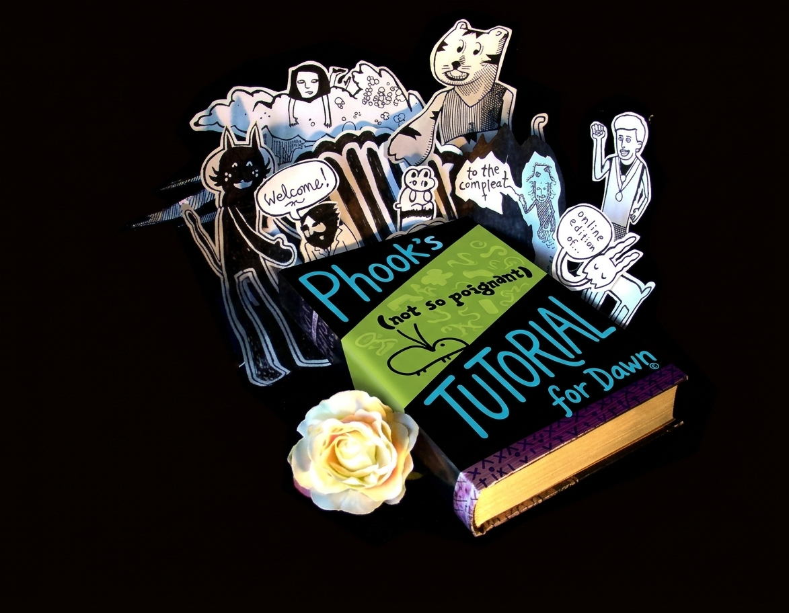
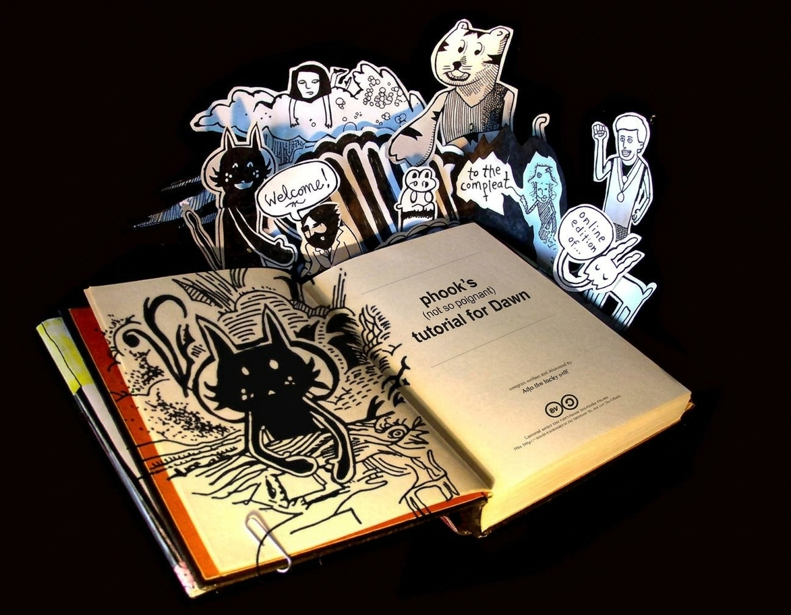

Phook's (not so poignant) Tutorial
for Dawn
Ohh! Fresh chapters snuck up! Goddaw, Dawn — strings, numbers and a whole program, drawings everywhichway.


(the book opens when you touch it — go on, open the book)
-
1. About this Tutorial
in which we meet, and pictures are shown for no reason at all
-
2. Goddaw, Dawn
in which URIs are bound together with >> and the world makes sense again
-
3. A Quick (and Hopefully Not Too Painful) Introduction to Dawn (with a Badly Drawn Rabbit)
in which a rabbit teaches you the whole language, whether it likes it or not
Tenderly written and illustrated by Phook.
Cover collage and book pix bow to why the lucky stiff.